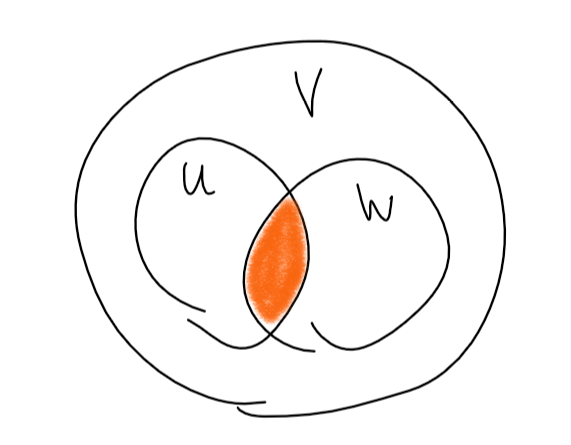

2023
Это было слишком много раз, чтобы писать заново.
Матрица перехода от базиса \(e\) к базису \(e’\) обозначается \(C_{e \to e’}\).
Утверждение: (свойства матрицы перехода)
Пусть \(e, e’, e’’\) - базисы в некотором конечномерном векторном пространстве.
Доказательство: \(\,\,\,\,\blacksquare\)
Утверждение: Пусть \(U, \,\,\,\, W\) подпространства векторного пространства \(V\). Тогда \(U \cap W\) подпространство \(V\).
Доказательство: Проверим по определению.
Определение: Пусть \(U, \,\,\,\, W\) подпространства векторного пространства \(V\). сумма \(U + W\) подпространств \(U\) и \(W\) - это \(U + W = \{u + w: \,\,\,\, u \in U, \,\,\,\, w \in W\}\).
Утверждение: Пусть \(U, \,\,\,\, W\) подпространства векторного пространства \(V\). Тогда \(U + W\) - подпространство в \(V\).
Доказательство: \(\,\,\,\,\blacksquare\)
Теорема: (формула кого-то там (Грассмана)) Пусть \(U, \,\,\,\, W\) подпространства векторного пространства \(V\). \[\dim U + \dim W = \dim (U \cap W) + \dim (U + W)\]
Доказательство:

Пусть \(e_1, \ldots, e_k\) - базис в
\(U \cap W\),
\(e_1, \ldots, e_m\) - базис в \(U\),
\(e_1,
\ldots, e_k, e_{m + 1}, \ldots, e_{n}\) - базис в \(W\). (\(\dim W =
n - m + k\)).
Докажем, что \(e_1, \ldots, e_n\) - базис в \(U + W\).
Определение: Пусть \(U, \,\,\,\, W\) подпространства векторного пространства \(V\). Сумма \(U + W\) прямая, если \(\forall x \in U + W \,\,\,\, \exists! \,\,u \in U, w \in W: \,\,\,\, u + w = x\).
Обозначается прямая сумма так: \(U \oplus W\).
Утверждение: Пусть \(U, \,\,\,\, W\) подпространства векторного пространства \(V\). Тогда \(U + W\) - прямая \(\Leftrightarrow U \cap W = \{0\}\).
Доказательство: \[\Rightarrow\] Пусть \(U \cap W \ne \{0\}\), тогда \(\exists x \in U \cap W\). \(x = x_{\in U} + 0_{\in W} = 0_{\in U} + x_{\in W}\), то есть существует два представления \(x\). противоречие.
\[\Leftarrow\] Пусть \(U + W\) не прямая сумма, тогда \(\exists x \in U + W: \,\,\,\, x = u’ + w’ = u + w, \,\,\,\, u’, u \in U, \,\,\,\, w’, w \in W\). Значит \(u’ - u \in U = w - w’ \in W\), то есть \(U \cap W \ne \{0\}\). Противоречие \(\,\,\,\,\blacksquare\)
Утверждение: Сумма подпространств \(U = U_1 + U_2 + \ldots + U_n\) - прямая \(\Leftrightarrow \,\,\,\, \forall i \in \{1, \ldots, n\} \,\,\,\, U_i \cap (U_{i + 1} + \ldots + U_n) = \{0\}\).
Доказательство:
\[\Rightarrow\] см. доказательство выше. \[\Leftarrow\] Пусть сумма не является прямой, тогда \(\exists u \in U: \,\,\,\, u = \Sigma u_i = \Sigma u_i’, \,\,\,\, u_i, u_i’ \in U\). Возьмем первую ненулевую разность \(u_i - u_i’\) и остальное перенесем вправо: \(u_i - u_i’ = -u_{i + 1} + u_{i + 1}’ + \ldots - u_{n} + u_{n}’\). Следовательно пересечение содержит не только нулевой вектор. Противоречие \(\,\,\,\,\blacksquare\)